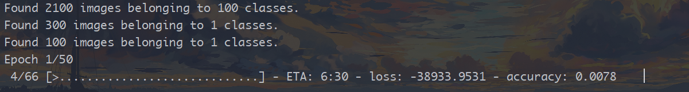
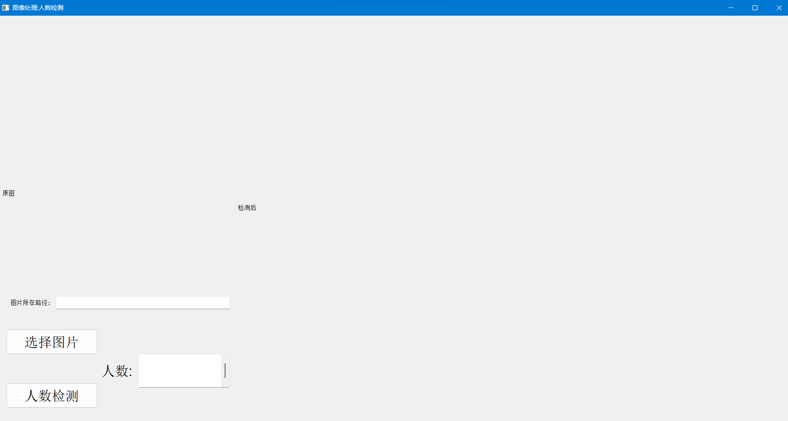
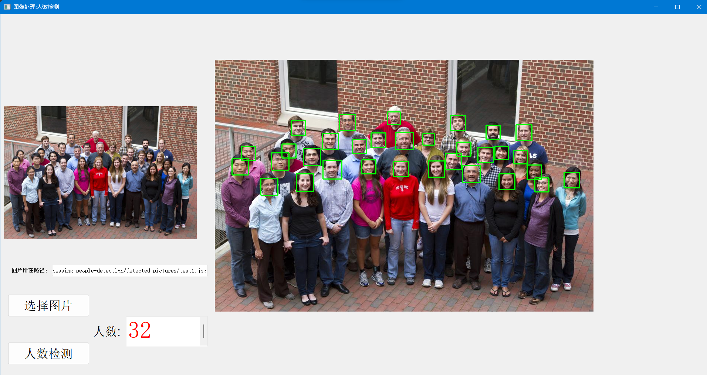

人数检测
——《图像处理》课程设计
数据集
中国科学院自动化研究所（CASIA）
CAS-PEAL-R1 Face Database
数据集信息

数据集介绍
中科院人脸数据库由联合研发部构建 先进计算机与通信技术实验室（JDL）中国科学院（CAS），
在中国国家高新技术企业的支持下（863）计划与ISVISION Tech. Co. Ltd.
建设CAS-PEAL人脸数据库旨在为全球研究人员提供 FR社区一个大型的中文人脸数据库，用于研究
开发和评估他们的 算法。中科院大型人脸 具有不同变化来源的图像，尤其是姿势、表情、 配件和照明（PEAL）
将用于推进最先进的面部 针对实际应用的识别技术，特别是针对 东方。
CAS-PEAL人脸数据库包含99，594张1040个人（595 名男性和 445 名女性）的图像不同的姿势、表情、配件
和照明（PEAL）。对于每个科目，9个摄像头在水平半圆形搁板中相等间隔，以 一次拍摄即可同时捕捉不同姿势的图像。
每 还要求拍摄对象上下查找以在另一个图像中捕获18张图像两枪。
我们还考虑了5种表情，6种配件（3 眼镜和 3 个盖子）和 15 个照明方向，以及不同的 背景、与相机的距离和老化变化。
数据集介绍
一个整个CAS-PEAL人脸数据库的子集由CAS-PEAL-R1命名，现已公开。
CAS-PEAL-R1包含30900张图像，1040个受试者。
对于每个主题，21种不同姿势的图像没有包括任何其他变体。
其余图像在分布均为正面姿势图像。
其中，379名受试者有具有6种不同表情的图像。
438名受试者的图像佩戴6不同的配件。
233名受试者在至少10种照明下拍摄图像变化，最多31次照明变化。
297名受试者有图像对2到4种不同的背景。
此外，66名受试者的图像记录在 每 6 个月进行两次会议。
下面是用于本项目的数据集的图片示例
训练集（train）

验证集（val）

测试集（test）

应用场景
1. 可以用于教室的人数统计，计算到课率
2. 可以用于公共场所的人流量统计,估计人流量
3. 可以用于零售环境中，可以计算特定区域的顾客数量，确定高峰时段
用到的技术
训练模型用到的技术
OpenCV：用于图像处理
Keras：深度学习框架,用于构建和训练模型
ResNet50：一个在ImageNet上预训练的卷积神经网络模型
数据增强：使用ImageDataGenerator对图像进行缩放、剪切、翻转等操作,以生成更多训练数据
Adam优化器：用于训练深度学习模型的优化算法
进行人数检测用到的技术
OpenCV：读取和操作图像、转换颜色空间、图像增强、应用人脸检测模型检测人脸，并在检测到的人脸周围绘制矩形框
PyQt5：用于构建GUI窗口，QFileDialog用于选择要检测的图像，QImage和QPixmap用于在GUI中显示原始图像和处理后的图像
Keras：用于加载保存的人脸检测模型
运行效果
训练模型过程

人数检测前效果

人数检测后效果

不足之处

不足:
1.数据集较大，训练模型时间长为了缩短训练时间，只好
减少用于训练的训练集图片，使得训练得到的模型在使
用时精度不高，尤其是低分辨率图片
2.数据集中侧脸图片较少,对包含侧脸的图片的检测效果不好